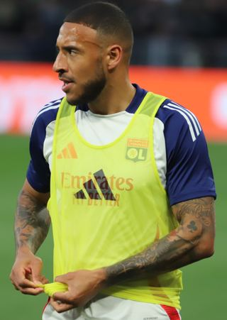

Ezzcoins › Player pages › Corentin Tolisso
82
CM

Tolisso
OL
Photo (cropped): Paté kroute · CC0 · Wikimedia Commons
Photo source
https://commons.wikimedia.org/wiki/File:Tolisso_asse_ol_2425.png
Licence: http://creativecommons.org/publicdomain/zero/1.0/deed.en
Corentin Tolisso
82 CM · OL · Ligue 1 McDonald's ·  France
France
No console price yet. Add this player to your watchlist on Ezzcoins: the most-watched players get a price every hour.
PAC68
SHO79
PAS80
DRI76
DEF79
PHY82
- Position
- CM (also CDM, CAM)
- Club
- OL
- League
- Ligue 1 McDonald's
- Nation
- France
- Skill moves
- 3★
- Weak foot
- 2★
- Preferred foot
- Right